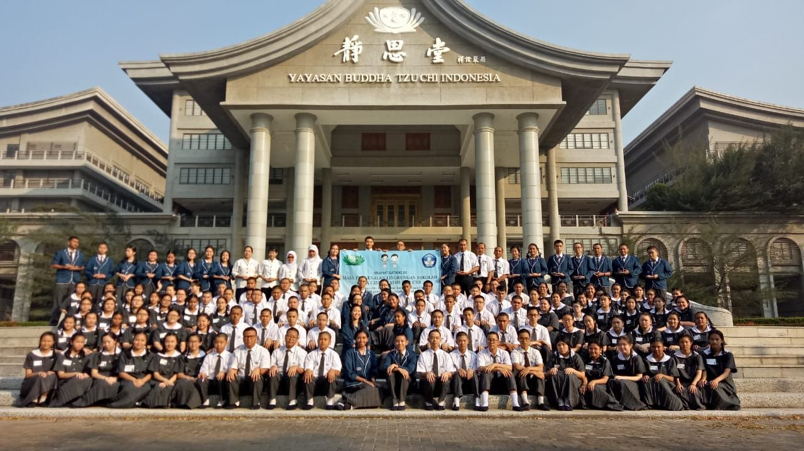
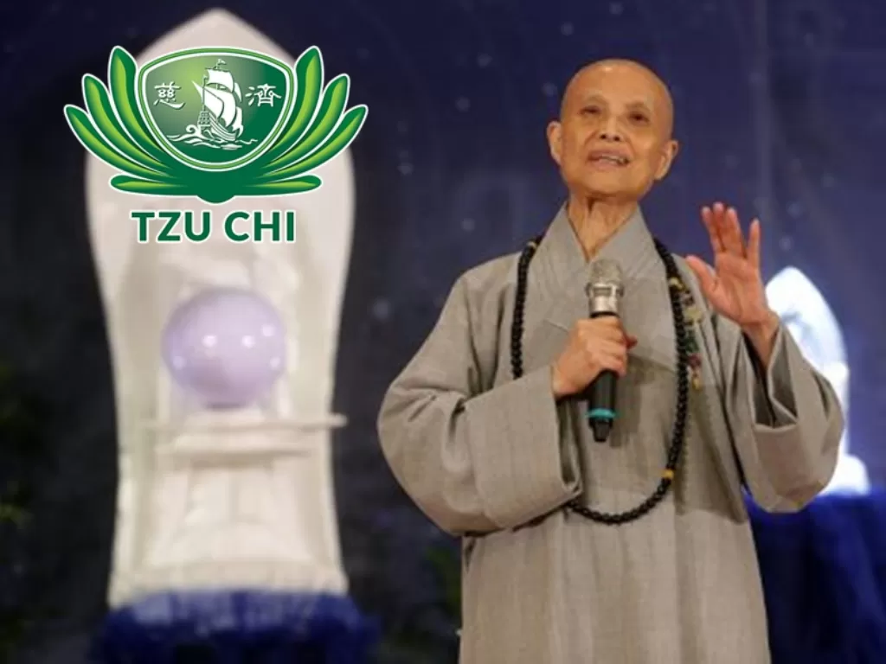

Gerakan Peduli Lingkungan: Sebuah Inisiatif untuk Masa Depan yang Lebih Hijau

Gerakan Peduli Lingkungan (GPL) yang digagas oleh Sekolah Cinta Kasih Tzu Chi merupakan bentuk nyata kontribusi terhadap kelestarian bumi. Dengan melibatkan seluruh elemen sekolah—siswa, guru, orang tua, dan masyarakat sekitar—GPL berfokus pada pentingnya kesadaran lingkungan.
Tujuan Gerakan Peduli Lingkungan
Gerakan ini bertujuan untuk meningkatkan kesadaran akan pentingnya menjaga lingkungan melalui berbagai program yang edukatif dan berkelanjutan.
- Mengurangi penggunaan plastik di lingkungan sekolah.
- Meningkatkan budaya daur ulang.
- Mendidik siswa tentang pelestarian sumber daya alam.
- Melatih kebiasaan ramah lingkungan dalam kehidupan sehari-hari.
- Mendorong komunitas sekitar untuk berpartisipasi dalam pelestarian alam.
Kegiatan Utama Gerakan Peduli Lingkungan
- Program Zero Waste: Pengurangan sampah plastik dengan membawa alat makan sendiri.
- Daur Ulang: Menyusun kegiatan daur ulang plastik dan kertas di sekolah.
- Penanaman Pohon: Menanam pohon sebagai bagian dari konservasi alam.
- Edukaasi Lingkungan: Mengadakan workshop tentang pelestarian lingkungan.
- Bersih-bersih: Menyelenggarakan kegiatan bersih lingkungan di sekitar sekolah.
Ayo Bergabung dalam Gerakan Ini
Segera bergabung dan ikut serta dalam gerakan yang bertujuan menciptakan lingkungan yang lebih hijau dan sehat untuk kita semua.

Kata Perenungan Master
我們要做好社會環保,也要做好內心的環保
“Kita harus melakukan pelestarian lingkungan masyarakat dengan baik, juga harus melakukan pelestarian lingkungan batin sendiri dengan baik.”
Hubungi Kami
Call Anytime: +62 21 5439 7462
Send Email: info@cintakasihtzuchi.sch.id
Visit Office: Jl. Kamal Raya Outer Ring Road No.20, Cengkareng, Jakarta Barat 11730